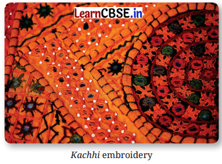

Ila Sachani's Life and Works
Alt Text
Ila Sachani was a writer, social worker and artist. she was born on February 14, 1944, in Ahmedabad, Gujarat. She grew up in a family that valued education.
She used to write novels, short stories, and essays on social problems and women empowerment.
She creates beautiful embroidery artwork with her feet, even when she was born with a physical disability.
Ila worked hard to promote women's education and Healthcare. Her life journey and talents inspire people today, reminding us of the power of Creativity and Determince